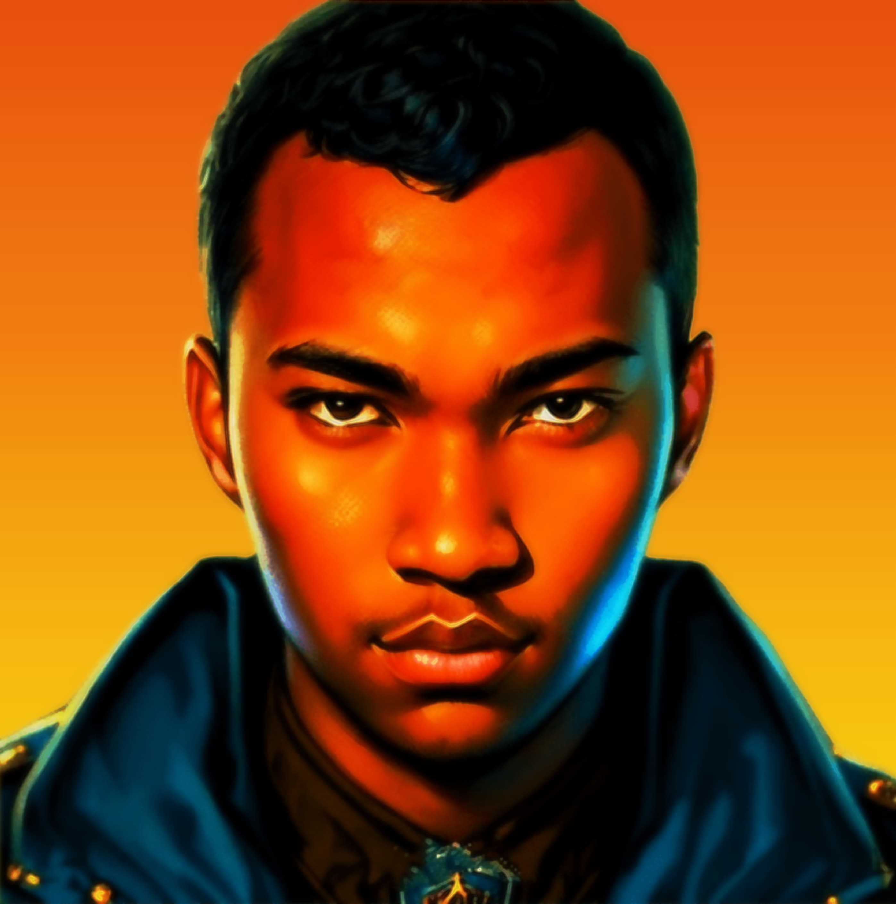

🐧
RezaOS 24.04 LTS
|
tty1
|
anka@reza-station:~
GNU/Linux 6.8.0-generic (x86_64)
eth0: 1000 Mb/s
|
--:--:--
|
.--.
|o_o |
|:_/ |
// \ \
(| | )
/'\_ _/`\
\___)=(___/
RezaOS GNU/Linux 24.04.1 LTS (kernel 6.8.0-generic)
Politeknik Negeri Malang • D4 Teknologi Informasi // Initializing Systemd Subsystems...
RezaOS 24.04.1 LTS reza-station tty1
reza-station login: █
Password:
Sedang memuat kernel dan modul jaringan... Tekan [Enter] atau [Esc] untuk langsung masuk terminal.
anka@reza-station:~$
neofetch
RezaOS 24.04.1 LTS (GNU/Linux 6.8.0-generic x86_64)
* Almamater: Politeknik Negeri Malang (POLINEMA) - D4 Teknologi Informasi
* Spesialisasi: IT Support Specialist • Cisco Network Engineer • Web Developer
* System Load: 0.08, 0.04, 0.01 | Uptime: 4+ Tahun Pengalaman & Eksplorasi
* Spesialisasi: IT Support Specialist • Cisco Network Engineer • Web Developer
* System Load: 0.08, 0.04, 0.01 | Uptime: 4+ Tahun Pengalaman & Eksplorasi
Last login: Sat Oct 24 2026 on tty1 from 127.0.0.1 (RezaOS Interactive Shell)
┌── [FRAMEBUFFER: 270x270 RGBA] ──┐

└── MUHAMMAD ANKA REZA (ONLINE) ──┘
anka@reza-station
----------------------------------------------------
OS:
RezaOS 24.04.1 LTS x86_64 (Linux Kernel 6.8.0-generic)
Host:
Politeknik Negeri Malang (POLINEMA) // D4 Teknologi Informasi
Roles:
IT Support Specialist • Network Engineer • Web Developer
Uptime:
4+ Tahun Eksplorasi & Implementasi Teknis
Packages:
9 (Official Accreditations), 12 (Projects Deployed)
Shell:
zsh 5.9 / bash 5.2.21 (x86_64-pc-linux-gnu)
Terminal:
/dev/tty1 (Fullscreen Natural Linux Console)
Status:
● Terbuka untuk Peluang Kerja & Kolaborasi Teknis
Lokasi:
Malang / Blitar, Jawa Timur, Indonesia
┌── [ REZA-OS SYSTEM DISPATCH MENU ] ──────────────────────────────────────────┐
│ // Tekan angka [1-8] di keyboard, klik baris menu, atau ketik perintah di prompt │
├─────────────────────────────────────────────────────────────────────────────┤
[ 1 ]
./portfolio.sh
==>
★ BUKA WEB PORTOFOLIO LENGKAP (Full Interactive Technical Showcase)
EXECUTE ↗
[ 2 ]
./linkedin.sh
-->
Profil LinkedIn Resmi Muhammad Anka Reza (Karier, Sertifikasi, & Relasi)
LINK ↗
[ 3 ]
./whatsapp.sh
-->
Chat WhatsApp Langsung (Konsultasi Teknis, Wawancara, & Tawaran Kolaborasi)
CHAT ↗
[ 4 ]
./github.sh
-->
Repositori Proyek GitHub & Open Source Code Repository
CODE ↗
[ 5 ]
./email.sh
-->
Kirim Transmisi Email Resmi ke rezawalker02@gmail.com
MAIL ↗
[ 6 ]
./instagram.sh
-->
Dokumentasi Portofolio Desain Grafis & Feed Instagram (@toxickers002)
FEED ↗
[ 7 ]
./twitter.sh
-->
Pembaruan Tech, Opini Teknis, & Akun Twitter / X (@Toxickers1)
POST ↗
[ 8 ]
./resume.pdf
-->
📄 DOKUMEN RESMI CV / RESUME (Muhammad Anka Reza - Unduh Berkas PDF)
UNDUH ↗
└─────────────────────────────────────────────────────────────────────────────┘
[SHELL ACTIVE]
Ketik perintah di baris prompt atau klik cepat:
help
ls
skills
neofetch
ping
cowsay
fortune
anka@reza-station:~$
[PDF-VIEWER]
/home/reza/resumeCV/resume.pdf (evince / xpdf)
Tekan [Esc] atau tombol silang untuk kembali ke terminal
Ukuran: ~610 KB (PDF Resmi)